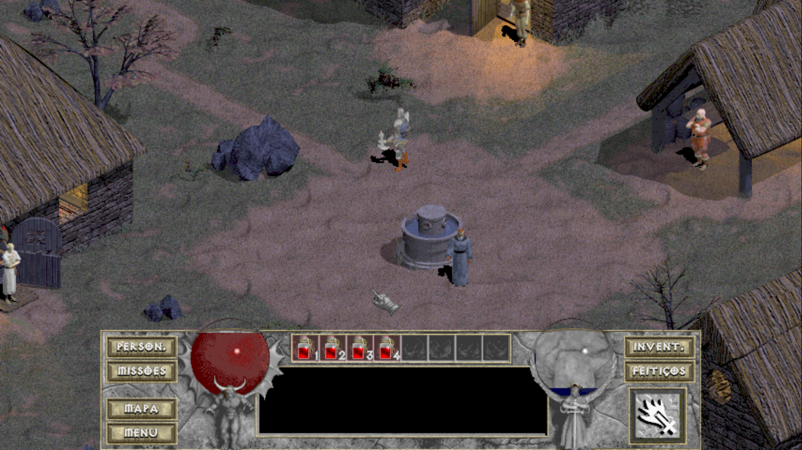
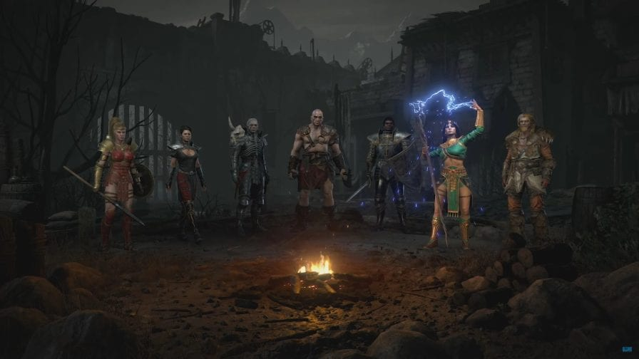
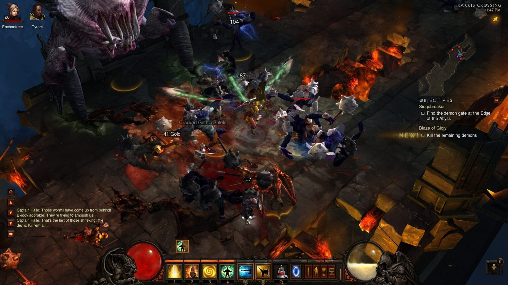

A Franquia Diablo
Diablo é a maior e mais bem sucedida franquia de rpg's de ação isométrico dos videogames e esse é um pequeno resumo da história breve da franquia da Blizzard Entertainment.
Diablo
A quase três décadas atrás, a Blizzard publicava aquele que seria o rpg de ação isométrico mais influente da história dos videogames, o primeiro capítulo da franquia era muito inovador pra época ao trazer elementos dos rpg's de mesa para pc's com um foco muito maior na ação e não tanto na história ou no desenvolvimento dos personagens. Diablo apresenta três classes, o guerreiro, classe de jogabilidade mais simples, o mago que era muito mais complexo e a ladina que era o equilíbrio entre os dois, ao longo de dezesseis níveis recheados de inimigos variados, o jogo tem uma ótima linha de aprendizagem e é gostoso sentir que seu personagem evolui na medida que as dificuldades do jogo crescem.
Diablo II
Assim como muitas continuações de filmes famosos, a sequência de diablo deveria ser maior e melhor que seu antecessor, e assim foi. Diablo II nos trouxe inicialmente cinco classes, o bárbaro, o paladino, a amazona, a feiticeira e o necromente, posteriormente duas novas classes chegaram junto de uma expansão de conteúdo chamada Lord of Destruction, as novas classes eram o druída e a assasina. O jogo é maior que o primeiro em tudo, com uma campanha quatro vezes maior, gráficos superiores e uma história envolvente, o que era inédito para a franquia. O sucesso foi imediato e muitos afirmam até hoje que Diablo II é e sempre será o maior jogo desse subgênero.
Diablo III
Diferente dos seus antecessores, o terceiro jogo da franquia não foi unanimidade entre os fãs por ter um clima muito menos sombrio, sujo e violento. É fato que Diablo III é um grande jogo e passou a ser mais aceito após alguns anos de seu lançamento mas definitivamente não é o mais memorável da franquia.
Diablo IV
O grande projeto da Blizzard no futuro é a esperada continuação que promete ser mais próxima do segundo jogo que de seu antecessor, Diablo IV ainda não tem data mas já é, com toda certeza, um dos lançamentos mais aguardados dos próximos anos.